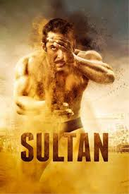

Top 5 movies in india
Avengers

The film was announced in October 2014 as Avengers: Infinity War – Part 2, but Marvel later removed this
title.
The Russo brothers joined as directors in April 2015, with Markus and McFeely signing on to write the script
a
month later. The film is a conclusion to the story of the MCU up to that point, ending the story arcs of
several
main characters. Its plot revisits several moments from earlier films, bringing back actors and settings
throughout the franchise. Filming began in August 2017 at Pinewood Atlanta Studios in Fayette County,
Georgia,
shooting back-to-back with Infinity War, and ended in January 2018. Additional filming took place in the
Metro
and downtown Atlanta areas, New York State, Scotland, and England. The official title was announced in
December
2018. With an estimated budget of $356–400 million, the film is one of the most expensive films ever
produced.
Read More
- Avengers
- movie name
- movie name
- movie name
Sanju

Sanju is a 2018 Indian Hindi-language biographical film directed and edited by Rajkumar Hirani, written by
Hirani
and Abhijat Joshi and produced by Hirani and Vidhu Vinod Chopra under the banners Rajkumar Hirani Films and
Vinod Chopra Films. The film chronicles the life of Bollywood actor Sanjay Dutt, notably focusing his drug
addiction, arrest for his suspected association with the 1993 Bombay bombings, relationship with his father,
and
acting career. Ranbir Kapoor stars as the title character, along with an ensemble supporting cast of Paresh
Rawal, Vicky Kaushal, Manisha Koirala, Anushka Sharma, Dia Mirza and Jim Sarbh.
Read more
3 idiots

3 Idiots is a 2009 Indian Hindi-language coming-of-age comedy-drama film written, edited and directed by
Rajkumar
Hirani, co-written by Abhijat Joshi and produced by Vidhu Vinod Chopra. Adapted loosely from Chetan Bhagat's
novel Five Point Someone,[5] the film stars Aamir Khan, R. Madhavan and Sharman Joshi in the titular roles,
marking their reunion three years after Rang De Basanti (2006), while Kareena Kapoor, Boman Irani and Omi
Vaidya
appear in pivotal roles. Narrated through two parallel dramas, one in the present and the other set ten
years in
the past, the story follows the friendship of three students at an Indian engineering college and is a
satire
about the social pressures under the Indian education system.[6][7][8]
Read more
chak de india!

Chak De! India (transl. "Go for it! India"[3] or transl. "Let's go! India")[4] is a 2007 Indian sports drama
film
directed by Shimit Amin, written by Jaideep Sahni, and produced by Aditya Chopra, under the banner of Yash
Raj
Films. It stars Shah Rukh Khan as Kabir Khan, the fictional former captain of the India men's national field
hockey team and coach of the India women's national field hockey team, alongside a cast of 16 actresses,
both
professional and non-professional hockey players. The soundtrack was composed by Salim–Sulaiman.
Read more
Sultan

Sultan is a 2016 Indian Hindi-language sports drama film[3][4][5] written and directed by Ali Abbas Zafar and
produced by Aditya Chopra under Yash Raj Films. The film stars Salman Khan in the titular role and Anushka
Sharma, along with Amit Sadh and Randeep Hooda. It narrates the story of Sultan Ali Khan, a fictional pehlwani
wrestler and former world wrestling champion from Haryana whose successful career has created a rift in his
personal life.[6]
Read More